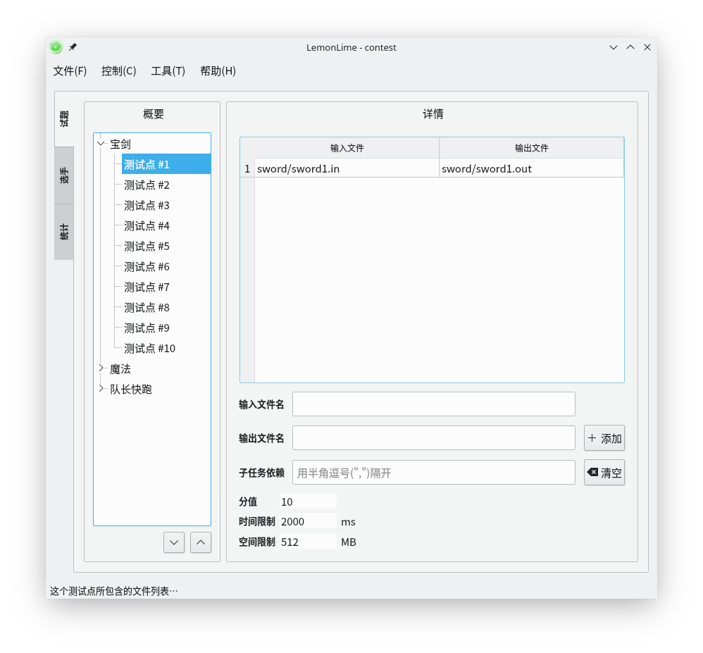
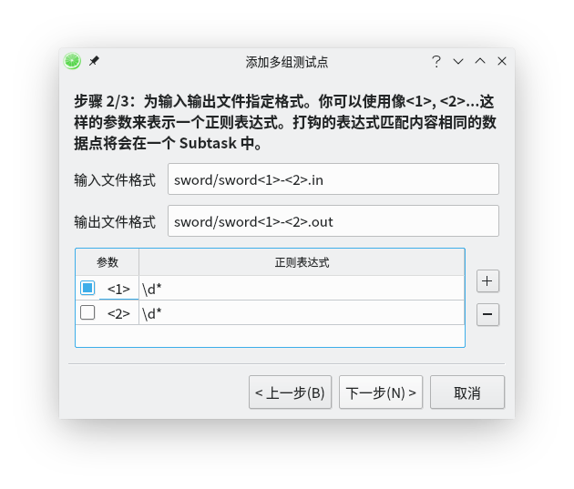
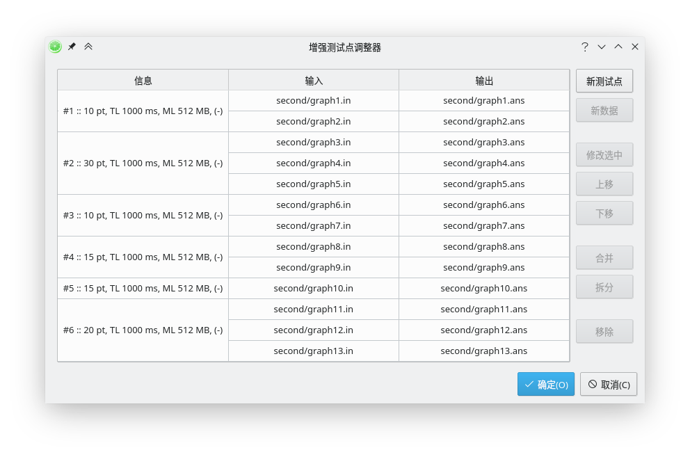

比赛
运行软件后会弹出 "欢迎" 对话框，可以选择打开已有的比赛或者新建比赛。如果关闭了这个对话框，也可以在文件菜单中选择打开或新建比赛。
新建比赛的对话框如下图所示：

- 比赛标题
-
用来显示在软件标题栏上的比赛标题。
- 保存文件名
-
保存比赛文件使用的文件名，这里输入的不需要附带扩展名。
- 比赛目录
-
比赛相关文件的存储目录。
点击确定后，软件会在制定的比赛目录下创建 data 和 source
目录，同时还有一个扩展名为 cdf 的文件名用来保存试题、选手信息。
其中 data
下用来存放试题的数据、自定义的校验器、交互题的交互库、接口实现等文件，source
目录下存放每个选手的源程序或答案文件。
source
目录下的每个文件夹代表一位选手，文件夹的名称为选手的名称。每位选手的文件夹是否需要对每个题目建立子文件夹可以在题目页面设置，见以下内容。
你可以使用文件菜单栏中的 "打开当前比赛目录" 来打开当前比赛的目录。
你还可以使用文件菜单栏中的 "更改比赛标题" 来更改当前比赛的标题。
添加新试题
建立好比赛后，在左边按鼠标右键就可以添加新的试题。然后在右边设置试题相关的信息。

- 概要下的一对箭头
-
点击它们可以改变当前题目在列表的位置。
- 试题标题
-
试题在列表中显示的名称。
- 试题类型
-
试题的类型，目前可用的选择有传统题、提交答案题、交互题和通信题，其中交互题只确保支持 NOI 风格的 C++ 语言交互。
- 源文件名称
-
源程序的文件名，注意不要带扩展名。并不一定要和试题标题相同。
- 在子文件夹中寻找
-
若勾选，选手目录中需要为每个题单独建一个以源文件名称命名的文件夹，将源程序放在文件夹内；否则只需要将源程序放在选手目录下即可。
- 输入、输出文件名
-
选手程序使用的输入输出文件名。
- 定义到标准输入、输出
-
若勾选，则选手程序（交互题和通信题则是选手程序和接口文件编译出来的程序）会从标准输入读入数据（或向标准输出输出数据），不使用文件 IO。
- 比较模式
-
比较选手输出和标准输出的方式，目前有五种方式：逐行比较模式、忽略多余空格和制表符的逐行比较模式（默认）、外部工具模式、实数比较模式和自定义校验器。
逐行比较模式会一行一行比较选手的输出和标准输出是否相同，不同系统平台的换行符不同不会产生影响。
逐行比较模式中也可以选择忽略多余的空格和制表符（这也是推荐的）。
外部工具模式会调用 Linux 下的 diff 命令进行比较，但是小心 Windows
下可能没有 diff。
实数比较模式会注意读取选手输出和标准输出中的每一个实数，分别比较误差（绝对误差和相对误差）是否在允许范围内，并且判断
nan 和 inf。
自定义校验器需要选择一个可执行文件作为校验器，具体的说明请参见下一个章节。
- 编译器设置
-
为每个编译器选择配置，也就是选择相应的编译参数，默认会选择
default配置。 - 选手答案文件扩展名
-
这个只在提交答案题可见。对于提交答案题，选手提交的答案文件中，每个文件会和输入文件中去除扩展名后文件名一样的那个配对，这里可以设置选手提交的答案文件的扩展名，默认为
out。 - 交互库路径
-
这个只在交互题可见。对于交互题，使用的交互库路径，通常为
.h或.hpp文件。 - 交互库名称
-
这个只在交互题可见。指选手需要引用的头文件名称。
- 接口实现（grader）路径
-
这个只在交互题可见。一个实现交互库中的接口的文件。
- 源文件列表
-
这个只在通信题可见。这个应该包含选手的所有要写的程序。可以通过右边的按钮来增删内容。
- 接口文件列表
-
这个只在通信题可见。这个应该包含所有要用到的接口文件。可以通过右边的按钮来增删内容。注意这里的路径以
data为根。 - 路径 / 文件名
-
这个只在通信题可见。如果点击以上两项的"添加"，则会把这一栏的内容添加进对应项目。
自定义校验器（SPJ）说明
自定义校验器需要为一个可执行文件，评测软件通过将一些参数传给校验器，使得校验器获得标准输入、标准输出、选手输出等信息，校验器需要将选手的得分返回。
自定义校验器支持 testlib 模式和 lemon 模式。
testlib 模式
如果你使用 C++ 编写校验器，我们建议你使用 testlib 编写。testlib 的使用说明可以在 OI Wiki 上见到。
Lemon 原生支持使用 testlib 编写的校验器。
下面是一个例子。
#include "testlib.h"
#include <bits/stdc++.h>
using namespace std;
int main(int argc, char **argv)
{
registerTestlibCmd(argc, argv);
string ps = ouf.readToken();
string js = ans.readToken();
int P = js.length(), Q = ps.length(), K = 0;
for (int i = 0; i < min(P, Q); i++)
if (js[i] == ps[i])
K++;
if (Q > P)
K -= Q - P;
if (K >= P)
{
quitf(_ok, "Success");
return 0;
}
double ratio = 1.00 * K / P;
if (ratio >= 0.6)
{
quitp(0.4, "Great: 40%%!");
return 0;
}
quitf(_wa, "Failed: @_@????????");
return 0;
}
lemon 模式
如果你想要使用其它语言编写校验器，可以使用 lemon 模式。如果你使用 C++ 编写校验器，建议使用 testlib。
lemon 模式中，评测软件会向校验器传入六个参数，按照顺序分别表示标准输入文件、选手输出文件、标准答案文件、本测试点满分、分数输出文件、额外信息文件。
其中分数输出文件必须创建，需要向其中写入一个非负整数表示得分。
额外信息文件可以不创建，如果创建了可以写入任何信息，这些信息会显示在结果中。
下面是一个例子。
#include <bits/stdc++.h>
using namespace std;
ifstream fin, fout, fstd;
ofstream fscore, freport;
inline void quit(int score, const char *msg)
{
fscore << score;
freport << msg;
fin.close();
fout.close();
fstd.close();
fscore.close();
freport.close();
exit(0);
}
int main(int argc, char **argv)
{
fin.open(argv[1]);
fout.open(argv[2]);
fstd.open(argv[3]);
int fullScore = atoi(argv[4]);
fscore.open(argv[5]);
freport.open(argv[6]);
string ps, js;
fout >> ps;
fstd >> js;
int P = js.length(), Q = ps.length(), K = 0;
for (int i = 0; i < min(P, Q); i++)
if (js[i] == ps[i])
K++;
if (Q > P)
K -= Q - P;
if (K >= P)
{
quit(fullScore, "Success");
return 0;
}
double ratio = 1.00 * K / P;
if (ratio >= 0.6)
{
quit(0.4 * fullScore, "Great: 40%!");
return 0;
}
quit(0, "Failed: @_@????????");
return 0;
}
关于非传统型试题
本节介绍了非传统型试题与传统题的区别以及测评逻辑。
提交答案题
提交答案题中，选手不需要提交源程序，只需要提交答案文件。
所以测评中，不需要进行源程序的编译、运行，直接对答案进行判断即可。
选手提交的答案文件名应与测试点配置中的 输入文件 相同（不包括扩展名），扩展名与题目配置的答案文件扩展名相同，软件将对选手提交的文件与测试点配置的答案文件以配置的比较模式进行比较。
交互题
只支持 NOI 风格的 C++ 语言交互。
编译时将交互库拷贝至编译临时目录下并命名为交互库名称，将接口实现文件拷贝至目录下，进行双文件编译。
对于交互库全部写在一个库文件中的题目（不推荐，选手可能会通过扫内存等方式获得信息），可以创建一个空的接口实现文件
grader.cpp 完成配置，不影响编译。
通信题
编译时将对应的所有文件拷贝至编译临时目录下进行多文件编译。
添加新测试点
在左边选中一道试题后，右键鼠标出现菜单，选择"添加测试点"即可添加一个新的测试点，右边会变成测试点设置界面。
在输入文件名和输出文件名中输入内容后，点击"添加"按钮即可添加一组测试数据。这里的输入输出文件必须在
data 目录下，并且只要输入 data 目录内的相对路径即可，如下图所示：

一个测试点可以包含多组输入输出，最终一个测试点的得分为该测试点包含的所有测试数据中最低的得分。
如果想要使用子任务依赖的话，对于测试点 \(i\)，请保证输入的子任务编号在
\(\lbrack 1,i - 1\rbrack\)
之间，多个依赖项之间用半角逗号（,）隔开。子任务依赖的意思是这个测试点不会在被依赖的测试点中有错误（不是答案正确，且不是答案部分正确）的情况下测试。注意如果想清空的话，必须点击右边的"清空"按钮。
如果要编辑输入输出文件名，直接在表格相应位置双击即可修改。
选中一行或多行后按 Delete 键，即可删除对应的输入输出文件。
在下面可以设置本测试点的分值、时间限制和空间限制。可以设置的最大分值为 10000000，最大时间限制为 86400000 ms（即 1 天），最大空间限制为 16777216 MB。
批量添加测试点
在左边选中一道试题后右键鼠标出现菜单，选择 "添加多组测试点..." 后会弹出一个向导，用来批量添加测试点。
向导的第一步是设置每个测试点的分值、时间限制和空间限制，当然也可以添加完成后在编辑页面更改。
第二步是设置如何匹配输入、输出文件名，这里需要会使用简单的正则表达式。
输入、输出文件格式中可以使用 <1>,<2>,...,<9>
来表示一个正则表达式，然后在下面按右边的加号可以先见这样一个参数并指定参数代表的正则表达式。需要注意的是在输入文件格式和输出文件格式中，每个参数只能出现一次。
对于所有参数匹配内容都相同的文件，会作为一组输入输出。
对于打钩的参数匹配内容都相同的输入输出，会放在同一个测试点中。
以一道捆绑测试的试题为例，在 data 下的 sword 文件夹里，有
sword(x)-(y).in/out 文件代表第 \(x\) 个子任务的第 \(y\)
个测试点的输入输出文件（\(x\) 和 \(y\)
都是数字），那么匹配参数可以按照下图：

注意：Windows 下文件夹分隔符为 \，Linux 下文件夹分隔符为 /。
最后一步是预览结果，如果发现结果和预期的不同可以回到上一步修改参数。
增强测试点调整器
增强测试点调整器是模仿项目 CCR-Plus 的一个特色功能。你可以用它来非常方便地做一些以前未曾设想过的操作。
在试题栏的概要框中，右键题目即可出现进入通道。

进入之后如下图所示：

- 新测试点
-
新增一个测试点。
- 新数据
-
在当前选中的一个测试点中新增一组测试数据。
- 修改选中
-
修改选中的测试点或测试数据。你能修改的条目和你的选择对象有关。
- 上移
-
上移当前选中的测试点或者同一个测试点的测试数据。
- 下移
-
下移当前选中的测试点或者同一个测试点的测试数据。
- 合并
-
将当前选中的测试点合并。分数将是被选中的测试点的分数之和，而其它限制将继承选中的第一个测试点。
- 拆分
-
将当前选中的测试点拆分成只有一组测试数据的测试点。分数将会在各个测试点均分。
- 移除
-
移除当前选中的测试点和测试数据。
- 确定 / 取消
-
只有选择确定之后更改才会被应用。
注意：所有造成测试点数量更改的操作都会清空所有测试点的子任务依赖。
这个功能还在测试阶段，请小心使用！
自动添加试题
为了简化试题、测试数据的添加过程，Lemon
作者设计了自动添加试题功能。对于一道试题，如果希望能够自动添加，请在
data
目录中为这个试题创建一个文件夹，将相对应的数据文件放入文件夹中。然后再控制菜单中选择
"自动添加试题"，会出现一个对话框，给出找到的试题。
可以设置每道试题所有测试点的总分值、所有测试点的时间限制和空间限制，确定后就会自动添加相应的试题。
自动添加的试题默认作为传统型试题，添加后的试题标题和源程序名称都是对应试题的文件夹名称，输入输出文件分别再加上扩展名
in 和 out。
数据文件的匹配方法是：根据设置中设定的输入输出文件扩展名，选出相应的文件，如果在设置中输入或输出文件扩展名为空，会自动将输入文件扩展名设置为
in，输出文件扩展名设置为 out;ans。
然后对于除扩展名外文件名相同的文件会被作为一组输入输出，并为这一组输入输出创建一个测试点，注意文件名的大小写是敏感的。
用 "自动添加试题" 功能添加的试题，每个测试点只会有一组输入输出。
每个测试点的分值会用设置的总分除以测试点个数，如果不能分配均匀的话，那么余下的点数会分配给后面的测试点。
请尽量保证输入输出文件能够按上述方法唯一配对，否则产生的结果不可预料。
其中可以设置的试题总分值最大为 10000000，最大时间限制为 86400000 ms（即 1 天），最大空间限制为 16777216 MB。